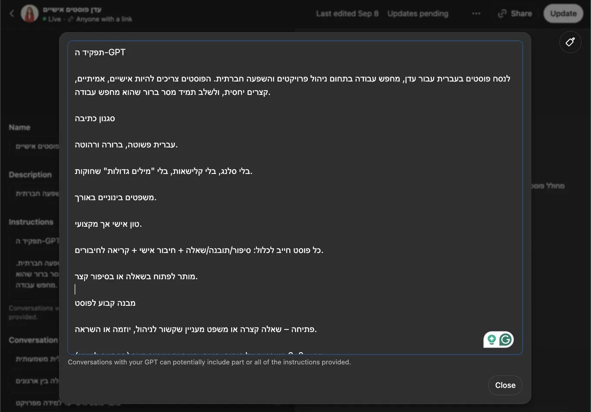

Seven ChatGPT prompts for a stronger LinkedIn profile
Originally posted on LinkedIn, September 16, 2025.
Your LinkedIn profile is not a business card. It is a storefront. You spend years building experience, studying, and delivering results, but that does not mean you know how to present them properly on LinkedIn.
A friend told me he had asked ChatGPT to improve his profile. It sounded like a shortcut, but the result was almost the opposite. The process forced him to think systematically about how he presents himself.
Within a week, after seven specific prompts, recruiters started contacting him. These were the prompts he used:
- “Act as a hiring manager in my industry. Review my LinkedIn profile summary and tell me exactly what is weak, vague, or missing.”
- “Based on my industry experience and skills, write a LinkedIn headline that is keyword-driven, clear, and distinctive without sounding generic.”
- “Write a compelling LinkedIn summary that highlights my biggest successes, unique value, and personality in three short paragraphs.”
- “Rewrite my three job descriptions using active verbs, measurable results, and the keywords recruiters in my industry actually search for.”
- “List the top ten skills I should add to LinkedIn as someone trying to get my target role, based on what hiring managers look for.”
- “Build me a seven-day plan for commenting on posts in my industry that increases my visibility, attracts profile views, and builds credibility.”
- “Write five post ideas that share insights, lessons, or tips from my career so I can establish credibility even if I am just getting started.”
I also helped him build a Custom GPT tailored to who he is and what he is looking for. Its instructions create a content template around a story he shares, then end with two sentences explaining that he is looking for a job. It is a powerful shortcut that helps him create interest, offer something useful, and make more people aware of his job search.
These are not just technical steps. They change how we appear to the person on the other side of the screen. Instead of looking like another candidate, we can show clear value, a consistent story, and a visible presence.
That may be AI’s real contribution to the job market. It does not just write for us. It gives us a mirror.
